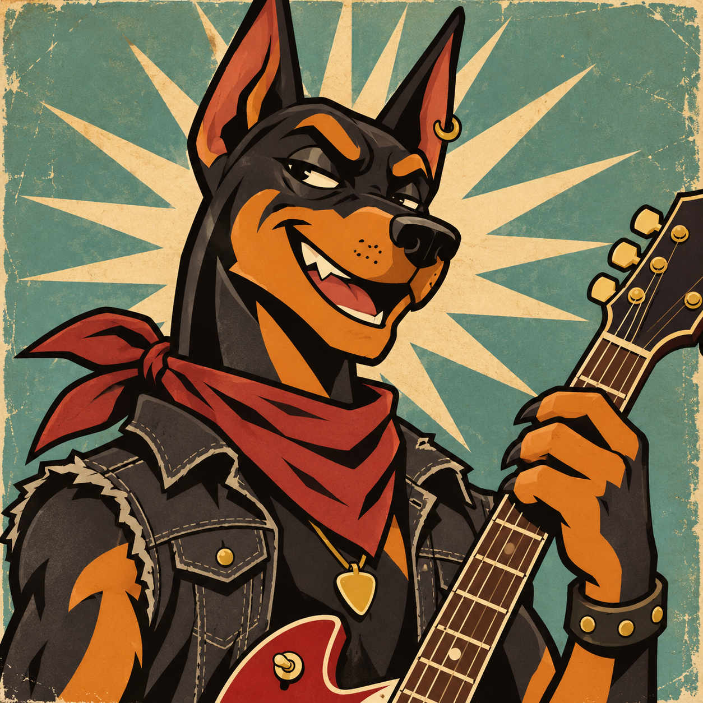
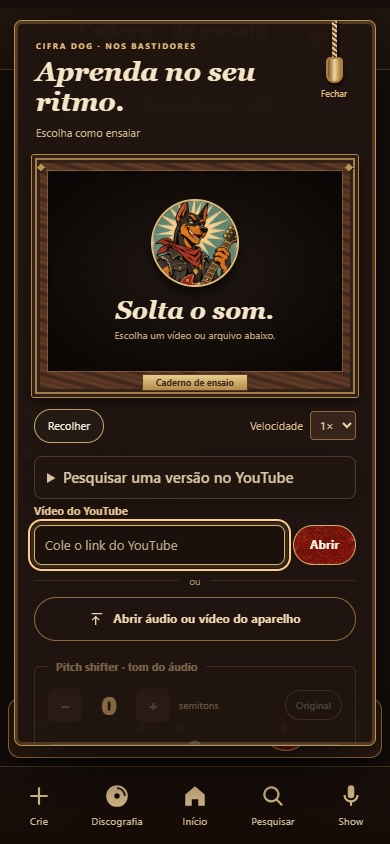
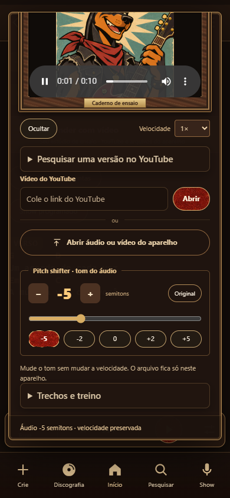
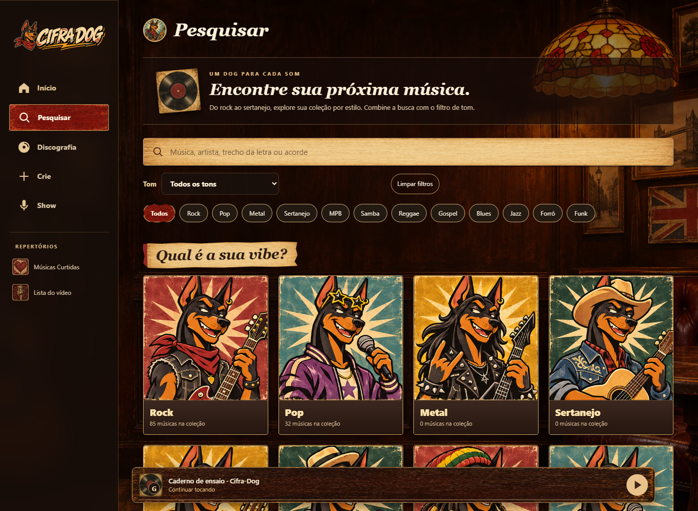

Mascote em desenho, textura vintage e um estúdio para ensaiar.

Contorno forte, bandana, guitarra e uma expressão de mascote. Cores de pôster, sombras em blocos e um toque vintage.


Arquivos do aparelho: tom de −12 a +12, ocultar sem interromper e reabrir. YouTube: vídeo incorporado, velocidade e player compacto visível.

Capturas reais em perfil isolado de verificação. As cifras de demonstração originais foram retiradas do aplicativo.